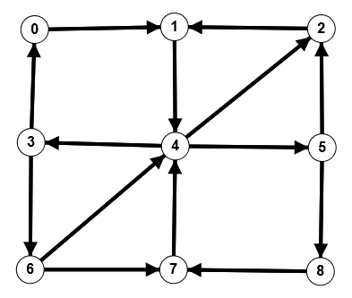

This past summer I had the amazing opportunity to attend the OSU REU and work on a really interesting project in the field of directed algebraic topology. Here is the paper that I had been working on over the summer.
It is very much a draft. The paper does not contain a lot of results or finished proofs (lol). The beginning of the REU involved me learning as much as I could about topics I never had studied before: algebra and algebraic topology. It was challenging, but also really fun to dive into a new area of math and then later start working on some concrete questions.
I also have some code I wrote that computes the homology of a directed graph (took me forever to program). I’ll post this up as well. Here is the poster I presented at the Young Mathematicians Conference 2019 at OSU alongside my research partner.
{kind=link}
Directed Algebraic Topology
Usually when we think of topological spaces, we don't think about them with a notion of direction. Directed topological spaces, or directed spaces, are spaces that do have a notion of direction--intuitively understand as the flow of time. Common examples of such spaces are spacetimes and directed graphs. The same way algebraic topology tries to find algebraic invariants that classify topological spaces up to homotopy equivalence, directed algebraic topology tries to find algebraic invariants that classify directed spaces up to directed analogues of homotopy equivalence. There are competing ways on how to formalize the idea of a directed space, see the Wiki entry on directed algebraic topology for some examples. Studying irreversible paths on topological spaces has applications in modeling irreversible phenomena, most notably in concurrent programming.
Directed Homology
There are competing ideas regarding how homology should be defined in the directed setting. Under the guidance of Dr. Sanjeevi Krishnan and alongside a peer research partner, I worked on a theory of directed homology proposed by Dr. Krishnan. My project investigated Dr. Krishnan’s proposed definition. I won't get technical here. For the definition and more details, see my writeup above. Whenever I refer to 'homology' from here on out I am assuming Dr. Krishnan's definition. The nth homology can be interpreted as counting the number of directed n-dimensional holes in a directed space. So for a directed graph, first homology can be seen as counting the number of 1-dimensional holes i.e. directed cycles in the graph theory sense. For example, in the graph below,
the first homology is 6 (more precisely, it is a monoid generated by 6 elements):
- Cycle 1 = (4,3,6,4)
- Cycle 2 = (4,3,6,7,4)
- Cycle 3 = (2,1,4,2)
- Cycle 4 = (2,1,4,5,2)
- Cycle 5 = (0,1,4,3,0)
- Cycle 6 = (7,4,5,8,7)
Research Conferences
I had the opportunity to present my research twice: at the 2019 Notre Dame Geometry and Topology Workshop and the 2019 Young Mathematicians Conference.